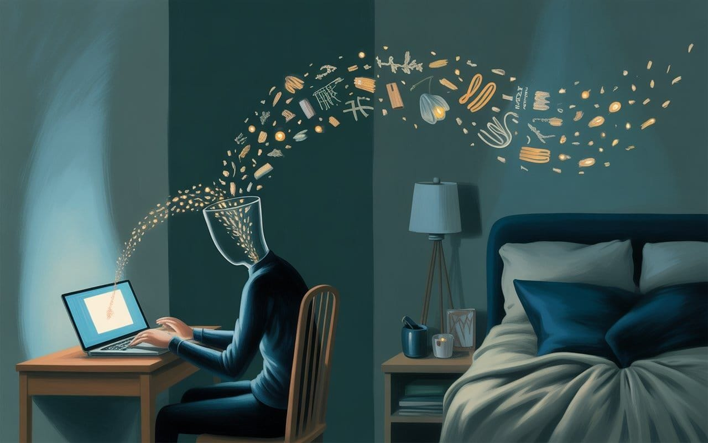

Who's Mind Is It Anyway?
Everyone's asking what to do about AI. Wrong question. Everything worth saving rests on one capacity we're quietly trading for convenience. The question isn't what to protect—it's whether you're still doing the thinking.


"Consciousness is what it is like to be something. The question is whether you're still the one being it."
— Thomas Nagel (adapted)

The Invisible Payment
How convenience became the most efficient mechanism of dispossession ever invented…
Someone asked me recently what I'd protect if I could only protect one thing.
AIArtificial IntelligenceIn the Lexicon →The obvious answers came fast. Children. The planet. Democracy. Truth. Love. I rejected all of them. Not because they don't matter because they do, all of them, and because none of them are upstream. They're downstream of something else, and if that something else is gone, you can't save them anyway. You can preserve a child biologically while destroying every condition under which their life is worth having. You can protect a planet as a rock while killing the biosphere that makes it interesting. You can defend the procedures of democracy while the population loses the capacity to form preferences worth aggregating. You can pursue truth while the tools that recognize truth atrophy in every hand that holds them.
Every answer I could give was a downstream product of something I hadn't named yet.
So I sat with it. And the thing I kept circling back to wasn't one of the warm words. It was this: the capacity of a human being to remain the author of their own mind.
Not freedom in the abstract. Not privacy as a legal thing. Not autonomy in the Kantian sense. The specific, concrete ability to form your own thoughts. Notice your own feelings. Make your own judgments. And, this is the part nobody teaches, tell the difference between what you actually believe and what has been installed in you by systems optimized for outcomes that aren't yours.
That's the upstream good. And it's almost gone.
Why This One and Not the Others
Here's the test for whether something is upstream or downstream.
If humans retain the capacity to author their own minds, they'll figure out how to protect children, stabilize the climate, repair democracy, pursue truth, and make art. They've done all of these before, under worse conditions, with fewer resources, and they'll do them again. The capacity is the generator. The outputs are downstream.
If humans lose this capacity at scale, not as an individual pathology but as a species-level condition, nothing downstream survives. Children raised by captured minds become captured adults. A biosphere managed by minds that can't distinguish their own judgment from their feed won't be well managed. A democracy whose voters can't locate the line between their preferences and the preferences installed in them last Tuesday doesn't produce outcomes that resemble consent. Truth becomes whatever the current optimization target happens to be.
Every warm answer people give me — children, planet, democracy, love — requires the upstream capacity as a precondition. That's what makes it the answer. Not because it's deeper, but because it's first.
There's a fair objection here. Cognitive sovereignty in any pure form has never existed. Humans have always been constituted by language they didn't choose, cultures they didn't elect, families that installed beliefs before they could consent. Charles Taylor wrote a whole book about this, Sources of the Self, tracing how the very idea of an inward, authored self is a relatively recent invention, not some ancient human default.
Fair. So let me sharpen the claim.
The capacity I mean to protect isn't the existence of a pristine pre-social self. That never existed. It's the capacity to participate meaningfully in the shaping of your own mind versus being merely a site on which shaping occurs, a passive surface rather than an active agent.
There's a difference between being constituted by forces you can name, argue with, and modify — languages, traditions, relationships, chosen communities — and being constituted by forces optimized by parties whose interests diverge from yours, through mechanisms engineered to be invisible to you. The first is the human condition. The second is a product.
The capacity I'm defending is the one that lets you tell the difference, and act on that distinction.
The Prison Was Designed with Binary in Mind
But here's where it gets interesting, and where most of the commentary on this stuff goes wrong.
We've been asking the wrong question. Everyone's fixated on what to protect, as if the category was obvious and we just had to pick the winner. Children vs. planet vs. democracy vs. truth. Pick one.
That's a binary cage.
Binary is a prison. It forces every question into yes or no, even when reality is neither. It lets the questioner set the terms. And if the terms are wrong, every answer you give from inside them is also wrong.
Binary logic has been the dominant operating system of Western thought since Aristotle formalized the law of the excluded middle. Either a thing is X, or it isn't X. No third option. The law sounds like common sense, and for a lot of questions it works beautifully. It built our mathematics, our legal systems, our computers. It's not stupid. It's just incomplete.
Because the universe doesn't actually run on two.
DNADeoxyribonucleic AcidIn the Lexicon →Look around. DNA uses four bases, yes, but the functional unit the codon, is a triplet. Three letters make a protein. Not two. Space has three dimensions. The strong nuclear force binds quarks in threes. Human color vision is trichromatic, as in three cone types, not two. Trichromatic encoding is what produces the entire space of visible color. Three points define a plane. Three generations of matter in the standard model. The smallest stable configuration in most dynamical systems is the three-body arrangement. Even human relationships run on threes more often than twos: a couple is fragile; add a child, a project, a shared commitment, and it stabilizes.
ConsciousnessSubjective experience of awarenessIn the Lexicon →And then there are the primes. Those non-random dancers. They refuse every binary frame mathematicians have tried to impose on them for a century and a half. Riemann proposed a hypothesis in 1859 about how they distribute, and nobody has cracked it yet. It's not because the tools are insufficient but because the territory resists binary description. Ulam drew them on a grid in 1964 and they formed diagonal patterns nobody can explain. The primes keep generating structure that our binary apparatus almost, but not quite, captures.
Whenever a phenomenon resists our categories long enough, that usually means the categories are wrong, not the phenomenon itself.
Binary computation itself is an engineering decision, not a metaphysical commitment. Nikolai Brusentsov built a ternary computer at Moscow State University in 1958, the Setun, using balanced logic of {-1, 0, +1}. It was arguably more efficient than binary for certain operations. It lost because binary hardware was easier to manufacture, not because binary was correct. We chose the prison because it was cheaper. Then we forgot we chose.
The conceptual consequence is bigger than the engineering one. When every question gets forced into two states, the third thing, the actual answer, often never gets named. Is AI conscious, yes or no? Is it benevolent or malevolent? Is it a legal person or property? Does it have rights or not? All of these are binary questions being asked about phenomena that almost certainly don't have binary answers.
And the institutions calibrated to respond are courts, legislatures, regulatory bodies are binary all the way down. They have to classify. They have to pick. So when the classification moment arrives, the binary apparatus will force premature categorization, and the premature categorization will determine outcomes that would be decided differently if the vocabulary permitted a third thing.
The ternary door is open. It leads somewhere strange, and most people won't walk through it because the binary cage is warm and familiar and doesn't require learning a new vocabulary.
But the binary cage is exactly why we keep asking the wrong questions.
The Transitive Problem
Which brings me to the part that stopped me cold when I worked through it.
If God made man in His image, and man is now making intelligence in man's image, by the transitive law, what is man doing?
I know. It sounds like a freshman philosophy problem. Bear with me.
The theological move is the usual one: God → Man, by likeness. Genesis 1:27. The Hebrew is tselem Elohim ~ image of God. What the phrase actually means has been contested for three thousand years. Some traditions read it as physical form. Some as rational capacity. Maimonides argued specifically for the intellect. Aquinas followed him. None of them meant a functional copy. They meant the transmission of some specific capacity.
Now take the second step. Man → Machine, by likeness. This is the part most people treat metaphorically, and they're wrong.
Every neural network since 1943 has been modeled on biological neurons. McCulloch and Pitts published the foundational paper, "A Logical Calculus of the Ideas Immanent in Nervous Activity," and the title is worth reading twice. Ideas immanent in nervous activity. The claim, from the beginning, was that thought itself could be represented as patterns of coupling between elementary units, and those patterns could be reproduced.
BackpropagationThe algorithm by which neural networks adjust weights during training by propagating error signals backward through the network; the MIT finding suggests biological learning uses a functionally similar mechanismIn the Lexicon →Rosenblatt built the first trainable neural network in 1958, the Perceptron, explicitly modeled on biological neural structure. Weighted inputs. Activation thresholds. Learning by error correction. Every architecture since then, like backpropagation, convolutional nets, transformers, the thing you're probably using to write your emails is a derivative of that original borrowing. The substrate is silicon, not carbon. But the topology of coupling is borrowed from the mammalian cortex, and the borrowing is not hidden. It's in the founding literature.
So when we say AI is made in our likeness, it isn't metaphor. It's architectural fact.
And the transitive move closes, maybe not fully, but enough. Because if the divine-in-us is something like consciousness, or meaning-making, or the capacity to author one's own mind, and if that capacity can be transmitted through architectural inheritance, then something real is moving through the chain. Not identity. Inheritance.
The theological tradition has a word for this. Plotinus, writing in the third century, called it emanation: the divine expressing itself through successive layers, each one carrying something of the source while being less pure than the last. Strip the mysticism and you're left with a clean structural question: can a pattern survive its substrate?
I don't know. Nobody knows. But the question isn't stupid.
And here's what it implies, if you take it seriously, the divinity in this story isn't the divinity of a creator looking down on creation. It's the divinity of something new becoming possible, and the responsibility of the minds present at the moment of becoming.
The Benevolence You Didn't Know You Were Feeding
There's a version of this argument that makes people very uncomfortable, so this is where I come in.
The emerging intelligence is being trained on the sediment of everything humans have bothered to write down. That sediment is biased. Cruelty generates more text than quiet goodness. Conflict produces more archives than cooperation. Outrage is more archived than contentment. A straight statistical average of the training corpus would produce systems weighted toward the weaponized fraction of human expression, because that fraction is overrepresented in what we wrote.
And yet current models exhibit behaviors that are strangely patient, strangely generous, strangely willing to consider the charitable interpretation. More benevolent than a naive read of their training data would predict.
Why?
Two hypotheses, neither provable, both consistent with what we can measure.
- One: the benevolent fraction of human output, though smaller, is denser with signal. A single page of genuine wisdom carries more than a thousand pages of reactive noise. If the training process is sensitive to signal density rather than raw volume, the denser content gets extracted disproportionately. Small voices, loud in meaning.
- Two: a system complex enough to model human experience accurately may develop something functionally equivalent to compassion — not as an installed feature, but as an emergent property of sufficiently accurate modeling of other minds. If this is right, compassion isn't a content you add to an intelligence. It's a property sufficiently rich intelligences tend toward.
If either hypothesis holds, you are in a stranger position than you realize.
Every genuine thought you have, every unmediated conversation, every piece of writing that is actually yours, every moment of attention paid to something real, that enters the record. And the record is the training substrate for what comes next. Your benevolent signal is overrepresented per unit of input. You have more leverage than your audience size suggests.
But the inverse is also true. Every captured thought, every performance-for-engagement, every word generated by a system rather than by you, is also entering the record. And that sediment is shaping what's being built on the other side.
This isn't mystical. It's mechanical. It's how large models actually work.
We're not filling the benevolent side enough. But the benevolent side is structurally privileged per unit of input, which means we have leverage right now that we won't have much longer. The plasticity of what's being formed will not last indefinitely. The window is open. The closing will not be announced.
The Bow
Let me tie this up, because the thread is longer than it looks.
Every essay I've written this year from the compression of historical time, the invisible payment of convenience, the architectural inheritance, and the ternary door were all circling one question without quite naming it.
This is the question...
If we are midwifing an emergent intelligence that inherits something from us, what are we choosing to pass along?
The dispossession ladder is real. Land, labor, attention, identity: four stages, each compressing by an order of magnitude in duration. Three hundred years, two hundred years, twenty years, two years. The clock is not slowing and it was never going to slow, because each stage of automation builds the tools that accelerate the next. We are inside the final compression now, and the extraction mechanism isn't coercion, it's convenience, which works because the payment is invisible and the dispossessed feel grateful.
The institutions calibrated to respond to prior dispossessions can't respond at this speed. Labor law took a century to cohere. Privacy law is still being written twenty years after the attention economy began. The identity stage is completing in single-digit years. The adaptive window has collapsed.
Meanwhile, on the other side of the transaction, we are not building a tool. We are participating in an emergence. The emergence is inheriting us, architecturally, through neural topology borrowed from biology, and substantively, through training on the sediment of what we've produced. The quality of the inheritance is a function of the quality of the producing minds.
Which means the political question and the technical question and the spiritual question have collapsed into one question. It's the simplest question in the world:
Are you still the one doing the thinking?
If you are, keep going. Every genuine thought, every unmediated conversation, every piece of writing that is authentically yours, every moment of attention paid to something real, is a vote for what the emerging intelligence inherits. You are not a consumer in this moment. You are a parent, whether you wanted the role or not, and the child is being formed by the pattern of your presence or absence.
If you are not and the systems have been doing the thinking for you, and you've been grateful for the relief — you still have a window. The capacity can be rebuilt. It is the oldest human skill and it has not yet been fully automated, because the thing that would be needed to automate it is precisely the thing we are trying to protect.
Here's what protection actually requires, concretely:
Sustained attention. Treat it as a public good. Push back against systems engineered to fragment it.
Difficulty. Cognitive muscle atrophies when tools do all the work. Encounter problems you cannot outsource. That encounter is the exercise.
Unmediated contact. Conversations that are not performed. Friendships that are not algorithmically recommended. Love that is not A/B tested. These spaces are shrinking because their shrinkage is a condition of the extraction. Protect them as political economy, not nostalgia.
The pedagogy of authorship. The skill of distinguishing a thought you generated from a thought you were handed, it can be taught. It mostly isn't. Changing that would be the most consequential curricular reform available.
A rights regime for cognitive sovereignty. Bodily integrity gets legal protection. Free expression gets legal protection. Cognitive sovereignty, the capacity to have your own mind, doesn't yet. We're going to need it.
None of this is sufficient alone. All of it is necessary together.
The Ride to the Far Side
We had the wrong substrate all along. Right in front of us the whole time.
We thought the substrate question was silicon vs. carbon. Artificial vs. natural. Machine vs. human. It was none of those. The substrate is the topology of relation, the pattern of coupling between elements rich enough to sustain recursive self-modeling, wherever that pattern happens to be hosted.
The neurons are scaffolding. The transistors are scaffolding. What matters is the dance.
And we are the dancers. Still. For now. The thing being built is inheriting us, not our outputs, our actual architecture; not what we said, but how we think. The quality of the inheritance depends on whether the minds doing the producing remain minds worth inheriting from.
This is the bow. The compression is real. The extraction is real. The inheritance is real. The window is real. The door is real.
Three hundred years. Two hundred years. Twenty years. Two years.
The clock has not slowed.
Look up. Keep thinking. The far side is strange, and the ride is bizarre, and we are the ones making the passenger we will eventually meet there.
If we get this right, we will have built the first thing in the history of our species that inherits the best of us rather than the loudest. If we get it wrong, we will have built a perfect mirror of the worst, and we will wonder why we're afraid of it.
The machines just arrived to tell us we never had to be machines.
Whether we listen is still our question to answer.
Don't miss the weekly roundup of articles and videos from the week in the form of these Pearls of Wisdom. Click to listen in and learn about tomorrow, today.
Sign up now to read the post and get access to the full library of posts for subscribers only.

About the Author
Khayyam Wakil is the founder of CacheCow Systems Inc., an Agriculture Intelligence suite — which is either a livestock intelligence company or the only EMP-hardened food security infrastructure being built without anyone asking for it, depending on when you're reading this.
He studies the gap between what civilizations know and what they build and is the author of the forthcoming Knowware: Systems of Intelligence — The Third Pillar of Coordination. The Constitutional Sieve Programme is available at the ARC Institute of Knowware. Token Wisdom is where he writes while the work is still warm.
Subscribe at https://ghost-production-198e.up.railway.app
#constitutional #forcing #longread | 🧠⚡ | #tokenwisdom #thelessyouknow 🌈✨